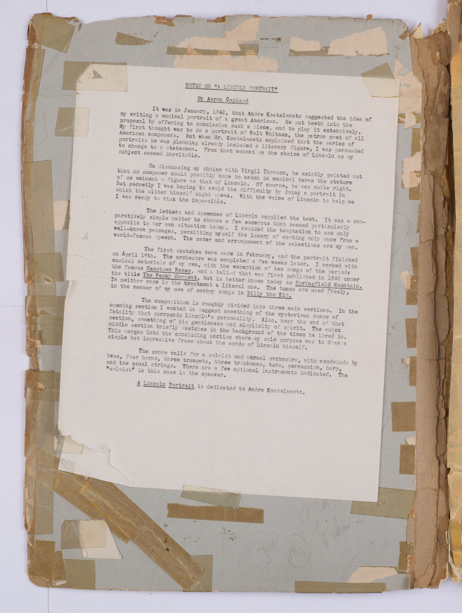
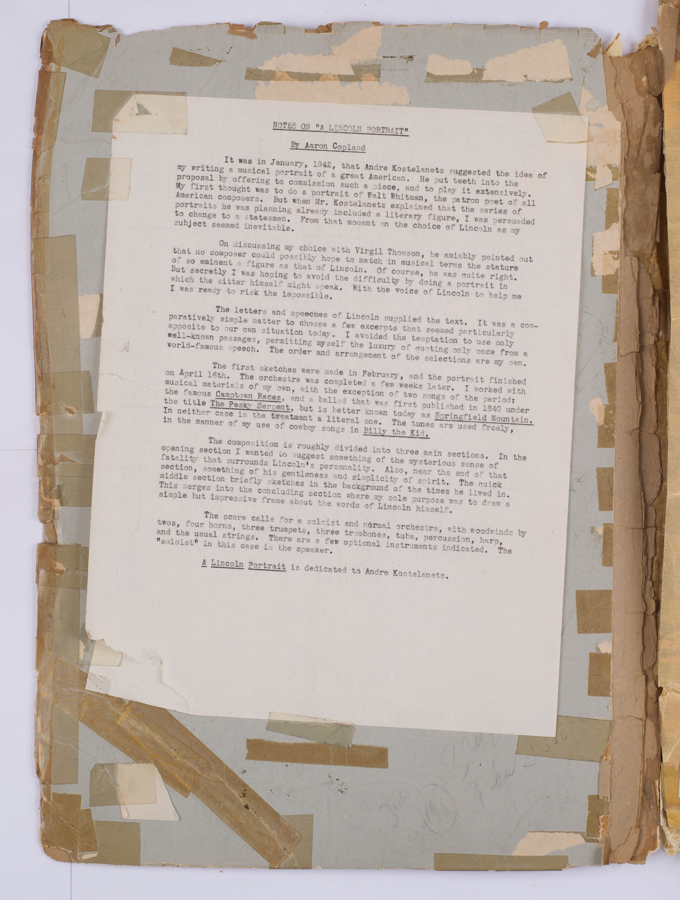

The Lincoln Portrait at the New York Philharmonic
 

About this Score
Andre Kostelanetz commissioned Aaron Copland in 1942 to create a musical portrait of a great American figure. He created The Lincoln Portrait, a dramatic work for orchestra and narrator, and used Lincoln’s own words from letters and speeches to supply the text.
Since its premiere in 1943, the New York Philharmonic has performed the work 36 times with 12 different narrators, including Carl Sandburg, Adlai Stevenson, Marion Anderson, and even Copland himself.
In commemoration of the 150th anniversary of Lincoln’s death, the New York Philharmonic presents the score used by Andre Kostelanetz signed by the many narrators with whom he shared the stage.
Click on the circles to learn more about each narrator and listen to audio from their performances.